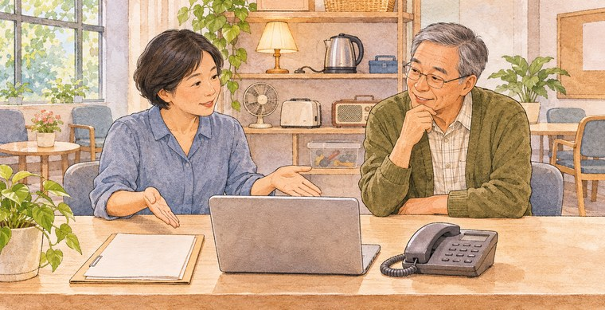

SUS-16 · 香港 · 10–15分钟 · 数字包容 · 全流程服务可及性 · 协助预约
线上优先，人人都能用吗？

社区里的数字使用支持
2024年12月13日，香港的社会创新及创业发展基金推出「友智识」长者数码共融计划（Smart Silver Digital Inclusion Programme for Elders），介绍了社区咨询站和实际操作方面的支持。这是服务设计的背景，并不能证明哪种渠道最好。下文的社区项目、预算、选项和操作演练均为原创虚构内容，并非对 Smart Silver 的评估。
课堂决策
香港有一个虚构的社区项目，向成年人免费提供家庭维修咨询预约，是否预约由本人决定。现有的电话预约和人工柜台预约继续获得经费，所需的无障碍措施、语言支持、隐私保护和合理调整也都保留。任何人都不必拥有智能手机、透露密码或接受亲属帮助。以下两个选项都符合项目要求；要决定的是如何使用额外的24,000港元，开展为期六周的改进，而不是要不要让人获得服务。
选项 A 新增自助在线预约系统，晚上也能使用，采用无障碍设计，并提供预约确认提醒。全部预算涵盖系统上线、维护和员工培训。选项 B 沿用现有预约技术，增加由受过培训的员工提供协助预约的时段，包括每周两个晚上。全部预算涵盖人员、替班和设备。两种选项共用同一批预约名额，采用相同的资格规则和公平分配流程；线上用户不享有优先权。两种选项都不会增加维修咨询的接待能力。
依靠现有支持，所有符合资格的预约请求都能按项目现行服务标准办妥。A 可能让能独立操作的用户更方便；B 可能让需要帮助的人更容易得到协助，不必等到现有办公时段。案例没有提供两种方案的完成率比较、需求预测或成本节省数据。请选择一项改进来拨款，不要把两项当成可以免费组合的方案。
| 选项 | 新增改进 | 保留的现有安排 |
|---|
| A · 线上预约更方便 | 非办公时间也可自助预约并接收提醒 | 保留现有协助预约渠道 |
| B · 增加协助预约时段 | 增加受过培训的人员提供协助，包括每周两个晚上 | 现有自助安排不变 |
你的决策这六周，你会拨款让线上预约更方便（A），还是增加协助预约时段（B）？说明谁会因此更容易获得服务，以及怎样才算成功完成预约。
第二轮 · 多了一项资料
在正式决定前，12名对预约协助有不同需求的志愿者试用了 A 的演示系统。他们使用虚构账号，不提交任何个人证件或材料。所有人都会操作智能手机。八人独立完成了预约；四人进入联系方式验证页面后，需要有人指点如何从演示消息切回预约页面，否则无法完成。受过培训的引导员只提供操作指导，不接收登录凭据，四人随后都完成了预约。界面允许使用无障碍替代方式和复制功能；演练只表明有人在这段操作流程中遇到困难，并不能证明系统违反标准，也不能说明他们普遍缺乏使用技术的能力。
还是这四个人，他们说，因为有照护或工作上的安排，现有的白天协助时段用起来不方便，但可以使用 B 新增的晚间时段。独立完成预约的八人看重随时都能预约。这些只是入选志愿者表达的偏好，既不是有代表性的需求估计，也不是对 A 和 B 的受控比较。他们的预约没有占用真实名额。
在 A 方案中，醒目的求助入口和现有协助预约服务仍然可用，但报价不包括增派晚间人员，也不包括重新设计验证流程。在 B 方案中，经用户同意，晚间工作人员可以全程指导预约、确认预约安排，并说明如何取消，同时不留存登录凭据。两种方案都保留已有经费保障的基础服务，但都不能保证用户按时赴约。重新设计流程或增派人员，都需要另作方案、单独核算成本，不能假定可以免费解决。
你的决策这次操作演练会改变你对这六周的选择吗？请指出预约流程中哪些环节应该提供支持，再提出两项指标，判断人们是否真的能完成预约。
有渠道不等于办成了事
真正的终点不是打开网页，而是完成一笔有效预约，且用户清楚预约安排，知道如何更改或取消。会操作智能手机，并没有消除四名志愿者在验证环节遇到的障碍。不要仅凭年龄、是否拥有设备或一项信心评分，就认定自己已经全面了解用户的支持需求。
明确当下的优先事项
如果眼下优先解决演练中发现的时段不便和操作指导不足，选 B 有道理。如果希望增加的好处是让用户全天都能方便地自助预约，且现有协助渠道确实好用，选 A 也说得通。现有证据指出了特定志愿者遇到的问题，却不能断定哪种方案总体上能让更多居民受益。
在遇到困难的地方提供帮助
在进入验证环节前和验证过程中，都要说明如何求助；提供一条能在协助下走完整个流程的渠道；结束时确认下一步。工作人员经用户同意后提供指导，操作仍由用户掌控。提供协助不等于收集密码、绕过身份核验，或要求家人无偿帮忙。不要认定一个只能在线使用的求助按钮就能满足所有人的需要。
衡量预约全流程
分别统计自助渠道和协助渠道的有效预约完成数占尝试预约次数的比例，同时记录用户在哪一步放弃、等候帮助用了多久。通过方便用户使用的渠道，既向完成预约的人征求反馈，也听听中途退出的人怎么说。之后是否赴约、能否取消预约，都是有用的后续检查，但不能和是否完成预约混为一谈。
不要把演练结果外推
在这次由入选志愿者参加的演练中，12人里有八人独立完成，四人在指导下完成。这些人数既不能预测总体使用率，也不能证明 B 的因果效果。请让目标用户和工作人员一起测试获得拨款的服务，了解晚间需求，在保护隐私的前提下查看流程数据，并在下一次拨款决策前核算任何重新设计的成本。
教师说明
在揭示演练结果之前，先请学生说清楚服务流程到哪一步才算结束。要求学生在 A 和 B 之间作出明确的预算选择，并指出谁会受益，不能只建议进一步研究。两种方案都继续为符合要求的现有服务渠道提供经费，因此不是让学生表决要不要履行义务。本案例的重点，是找出影响全流程服务可及性的障碍出现在哪里，而不是权衡培训的广度和深度、讨论软件上线速度，或泛泛讨论如何归因。
第二轮
在正式决定前，12名对预约协助有不同需求的志愿者试用了 A 的演示系统。他们使用虚构账号，不提交任何个人证件或材料。所有人都会操作智能手机。八人独立完成了预约；四人进入联系方式验证页面后，需要有人指点如何从演示消息切回预约页面，否则无法完成。受过培训的引导员只提供操作指导，不接收登录凭据，四人随后都完成了预约。界面允许使用无障碍替代方式和复制功能；演练只表明有人在这段操作流程中遇到困难，并不能证明系统违反标准，也不能说明他们普遍缺乏使用技术的能力。
还是这四个人，他们说，因为有照护或工作上的安排，现有的白天协助时段用起来不方便，但可以使用 B 新增的晚间时段。独立完成预约的八人看重随时都能预约。这些只是入选志愿者表达的偏好，既不是有代表性的需求估计，也不是对 A 和 B 的受控比较。他们的预约没有占用真实名额。
在 A 方案中，醒目的求助入口和现有协助预约服务仍然可用，但报价不包括增派晚间人员，也不包括重新设计验证流程。在 B 方案中，经用户同意，晚间工作人员可以全程指导预约、确认预约安排，并说明如何取消，同时不留存登录凭据。两种方案都保留已有经费保障的基础服务，但都不能保证用户按时赴约。重新设计流程或增派人员，都需要另作方案、单独核算成本，不能假定可以免费解决。
你的决策这次操作演练会改变你对这六周的选择吗？请指出预约流程中哪些环节应该提供支持，再提出两项指标，判断人们是否真的能完成预约。